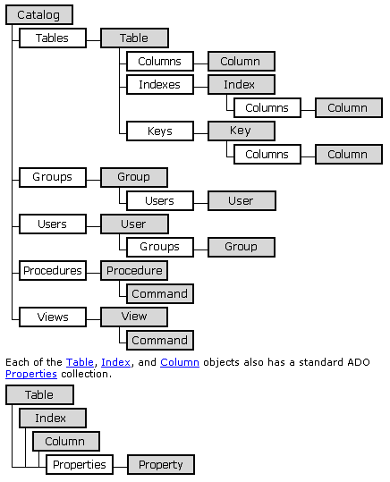

Программное создание базы данных с помощью ADOX. Часть 1 (исходники)
Источник: VBRussian
Что такое ADOX
Описание
Microsoft? ActiveX? Data Objects Extensions for Data Definition Language and Security (ADOX) - это официальное название от Microsoft. На практике это дополнение к объектной и программной модели ADO. В девичестве ADOX как я понимаю был DAO, хотя одно другого не отменяет. Просто библиотека ADOX более современная, поддерживает работу с современными базами данных MS SQL, Oracle и т.д. через ODBC и OLE DB и позволяет управлять не только структурой базы данных но и ее безопасностью (Группами и пользователями).
Объектная модель

Из представленной обектной модели видно, что ADOX позволяет работать с пятью сущностями современной реляционной базы данных Таблицы(Tables), Группы(Groups), Пользователи(Users), Процедуры(Procedures) и Представления(Views).
Не будем пока заострять внимание на каждой из этих сущностей. Подробно о них можно узнать обратившись к документации по ADO Цель данной статьи показать основные этапы по программному созданию и модификации базы данных средствами ADOX.
Программируем с ADOX
Необходимые ссылки и объекты
Для начала работы с ADOX необходимо проставить ссылку в Project - > References текущего проекта на библиотеку Microsoft ADO Ext. 2.x for DDL and Security. Где х в номере врсии может быть 5,6 или 7 в зависимости от версии ADO с которой вы работаете.
ADOX поставляется с дистрибутивом MDAC (Microsoft Data Access Components) начиная с версии 2.5
Самый главный объект
Самым главным объектом, как это видно в объектной модели, является объект Catalog. Он является по сути синонимом понятия база данных, поскольку является родительским объектом для таблиц, процедур, представлений и т.д.
В коде вашего проекта следует создать и инициировать объект ADOX.Catalog. К примеру так:
Private oCat as ADOX.Catalog
?
где нибудь в Form_Load()
Set oCat = New ADOX.Catalog
Создание базы данных
Для создания новой базы данных можно использовать процедуру приведенную ниже.
Sub CreateDatabase()
oCat.Create "Provider=Microsoft.Jet.OLEDB.4.0;Data Source=c:\new.mdb"
End Sub
В приведенном примере создается новая база MS Access с именем new, в корне диска c:. Следует отметить две важных детали. В случае если поставщик доступа к данным (Provider) не поддерживает операцию создания нового каталога (в нашем контексте базы данных) произойдет ошибка. И второе, После успешного создания базы данных свойство ActiveConnection нашего объекта oCat будет содержать ссылку на объект ADODB.Connection соединения с вновь созданной базой данных.
Открытие существующей базы данных
Для открытия существующей базы данных можно использовать следующую процедуру.
Sub OpenDatabase()
oCat.ActiveConnection = "Provider=Microsoft.Jet.OLEDB.4.0;Data Source=c:\new.mdb"
End Sub
Данная процедура откроет базу данных new.mdb расположенную в корне диска с:.
Работа с таблицами Таблиц
Добавление
Добавление таблицы к базе данных выполняется методом Append коллекции Tables объекта Catalog (мощно ввернул, внушает !!!)
Иными словами пишем в коде
oCat.Tables.Append NewTable
Где NewTable это объект Table.
Теперь превратим это сумбурное описание в процедуру.
Sub AddTable()
Dim oTable as new Table
oTable.Name = "MyTable"
oCat.Tables.Append oTable
Set oTable = Nothing
Изменение
Для изменения свойств таблицы надо найти ее в коллекции oCat.Tables
Это можно сделать указав в качестве индекса ее номер, который определить сложно, или ее имя, что конечно более удобно.
oCat.Tables("MyTable").Name = "MyNewName"
Кроме свойства Name для изменения также доступны коллекции:
Удаление
Чтобы удалить таблицу необходимо вызвать метод Delete коллекции Tables передав в качестве параметра имя таблицы.
oCat.Tables.Delete "TableName"
Работа с полями
Добавление
Поля таблицы доступны через коллекцию Columns объекта Table. Для добавления поля в таблицу испоьзуется метод Append колекции Columns. Методу передаются один обязательный параметр, Имя поля и два необязательных, его Тип и Размер. Значение по умолчанию для типа adVarWchar. Значение по умолчанию для размера 0. Добавим в созданную нами таблицу одно поле:
oCat.Tables("MyNewTable").Columns.Append "Field1", adInteger
Ниже преведена таблица допустимых типов.
Таблица типов:
|
Константа |
Значение |
Описание |
|
adBigInt |
20 |
Indicates an eight-byte signed integer (DBTYPE_I8). |
|
adBinary |
128 |
Indicates a binary value (DBTYPE_BYTES). |
|
adBoolean |
11 |
Indicates a boolean value (DBTYPE_BOOL). |
|
adBSTR |
8 |
Indicates a null-terminated character string (Unicode) (DBTYPE_BSTR). |
|
adChapter |
136 |
Indicates a four-byte chapter value that identifies rows in a child rowset (DBTYPE_HCHAPTER). |
|
adChar |
129 |
Indicates a string value (DBTYPE_STR). |
|
adCurrency |
6 |
Indicates a currency value (DBTYPE_CY). Currency is a fixed-point number with four digits to the right of the decimal point. It is stored in an eight-byte signed integer scaled by 10,000. |
|
adDate |
7 |
Indicates a date value (DBTYPE_DATE). A date is stored as a double, the whole part of which is the number of days since December 30, 1899, and the fractional part of which is the fraction of a day. |
|
adDBDate |
133 |
Indicates a date value (yyyymmdd) (DBTYPE_DBDATE). |
|
adDBTime |
134 |
Indicates a time value (hhmmss) (DBTYPE_DBTIME). |
|
adDBTimeStamp |
135 |
Indicates a date/time stamp (yyyymmddhhmmss plus a fraction in billionths) (DBTYPE_DBTIMESTAMP). |
|
adDecimal |
14 |
Indicates an exact numeric value with a fixed precision and scale (DBTYPE_DECIMAL). |
|
adDouble |
5 |
Indicates a double-precision floating-point value (DBTYPE_R8). |
|
adEmpty |
0 |
Specifies no value (DBTYPE_EMPTY). |
|
adError |
10 |
Indicates a 32-bit error code (DBTYPE_ERROR). |
|
adFileTime |
64 |
Indicates a 64-bit value representing the number of 100-nanosecond intervals since January 1, 1601 (DBTYPE_FILETIME). |
|
adGUID |
72 |
Indicates a globally unique identifier (GUID) (DBTYPE_GUID). |
|
adIDispatch |
9 |
Indicates a pointer to an IDispatch interface on a COM object (DBTYPE_IDISPATCH). |
|
adInteger |
3 |
Indicates a four-byte signed integer (DBTYPE_I4). |
|
adIUnknown |
13 |
Indicates a pointer to an IUnknown interface on a COM object (DBTYPE_IUNKNOWN). |
|
adLongVarBinary |
205 |
Indicates a long binary value (Parameter object only). |
|
adLongVarChar |
201 |
Indicates a long string value (Parameter object only). |
|
adLongVarWChar |
203 |
Indicates a long null-terminated Unicode string value (Parameter object only). |
|
adNumeric |
131 |
Indicates an exact numeric value with a fixed precision and scale (DBTYPE_NUMERIC). |
|
adPropVariant |
138 |
Indicates an Automation PROPVARIANT (DBTYPE_PROP_VARIANT). |
|
adSingle |
4 |
Indicates a single-precision floating-point value (DBTYPE_R4). |
|
adSmallInt |
2 |
Indicates a two-byte signed integer (DBTYPE_I2). |
|
adTinyInt |
16 |
Indicates a one-byte signed integer (DBTYPE_I1). |
|
adUnsignedBigInt |
21 |
Indicates an eight-byte unsigned integer (DBTYPE_UI8). |
|
adUnsignedInt |
19 |
Indicates a four-byte unsigned integer (DBTYPE_UI4). |
|
adUnsignedSmallInt |
18 |
Indicates a two-byte unsigned integer (DBTYPE_UI2). |
|
adUnsignedTinyInt |
17 |
Indicates a one-byte unsigned integer (DBTYPE_UI1). |
|
adUserDefined |
132 |
Indicates a user-defined variable (DBTYPE_UDT). |
|
adVarChar |
204 |
Indicates a binary value (Parameter object only). |
|
adVariant |
200 |
Indicates a string value (Parameter object only). |
|
adVarNumeric |
12 |
Indicates an Automation Variant (DBTYPE_VARIANT). |
|
adVarWChar |
139 |
Indicates a numeric value (Parameter object only). |
|
adWChar |
202 |
Indicates a null-terminated Unicode character string (Parameter object only). |
|
adVarBinary |
130 |
Indicates a null-terminated Unicode character string (DBTYPE_WSTR). |
Изменение
Для изменения характеристик поля используется объект Column
Dim MyColumn as Column
Set MyColumn = oCat.Tables("MyNewTable").Columns(0)
'или
Set MyColumn = oCat.Tables("MyNewTable").Columns("Field1")
MyColumn.Name = "NewField1"
Свойства Type и DefaultSize открыты только для чтения после того, как поле было добавлено в коллекцию.
Удаление
Удалить поле из таблицы можно выполнив метод Delete коллекции Columns нужной таблицы, передав в качестве параметра имя поля.
oCat.Tables("MyNewTable").Columns.Delete "NewField1"
Работа с индексами и ключами
Рассмотрим работу с этими объектами на следующем примере:
Создаем объект типа Key. Под объектами key подразумеваются первичные и внешние ключи. Primary и Foreign соответственно.
Dim kyForeign As New ADOX.Key
' определим foreign key
kyForeign.Name = "CustOrder" ' Дадим ему имя
kyForeign.Type = adKeyForeign ' Установим тип
так же доступны типы: adKeyPrimary и adKeyUnique
Далее указывается ссылка на связанную таблицу
kyForeign.RelatedTable = "Customers"
kyForeign.Columns.Append "CustomerId" ' Сюда кладем имя ключевого поля
kyForeign.Columns("CustomerId").RelatedColumn = "CustomerId" ' Здесь имя поля в связанной таблице
kyForeign.UpdateRule = adRICascade ' Оговариваем правила контроля за каскадными обновлениями
доступны варианты:
Так же можно установиь правила для каскадного удаления свойству
kyForeign.DeleteRule
' Добавляем foreign key в коллекцию ключей
oCat.Tables("Orders").Keys.Append kyForeign
'Удалить ключ можно следующим образом:
oCat.Tables("Orders").Keys.Delete kyForeign.Name
Подобным же образом осущестляется работа с управлением индексами
Можно особо отметить следующую особенность:
У таблицы есть коллекция индексов. А уже у каждого индекса есть коллекция колонок т.е. полей входящих в этот индекс. Для простых индексов состоящих из одного поля, в коллекции колонок содержится одна колонка, для составных индексов в коллекции колонок индекса содержаться колонки входящие в этот индекс.
Вот пример. Добавим к таблице составной индекс из двух полей Field1 и Filed2.
Dim idx As New ADOX.Index
' Зададим параметры индекса
idx.Name = "Index1"
idx.Columns.Append "Field1"
idx.Columns.Append "Field2"
' Добавляем индекс в коллекцию
oCat.Tables("MyNewTable").Indexes.Append idx
Для удаления индекса как и везде используем метод Delete:
oCat.Tables("MyNewTable").Indexes.Delete idx.name
На этом позволю себе завершить краткий обзор работы с библиотекой ADOX.
|
Главная страница - Программные продукты- Статьи- Разработка ПО, Microsoft |